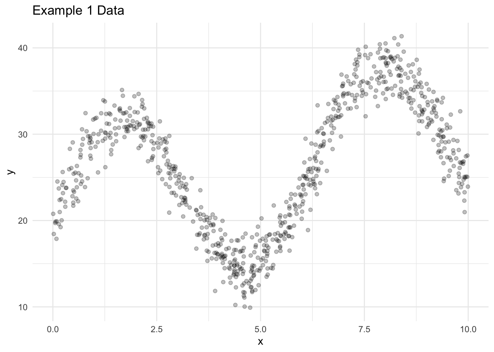
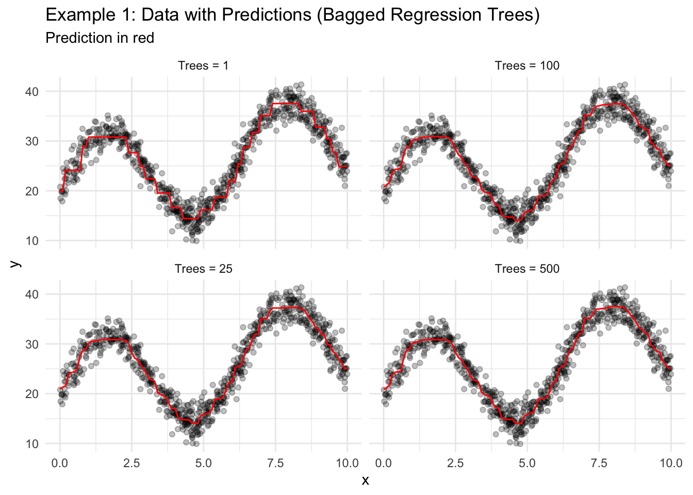
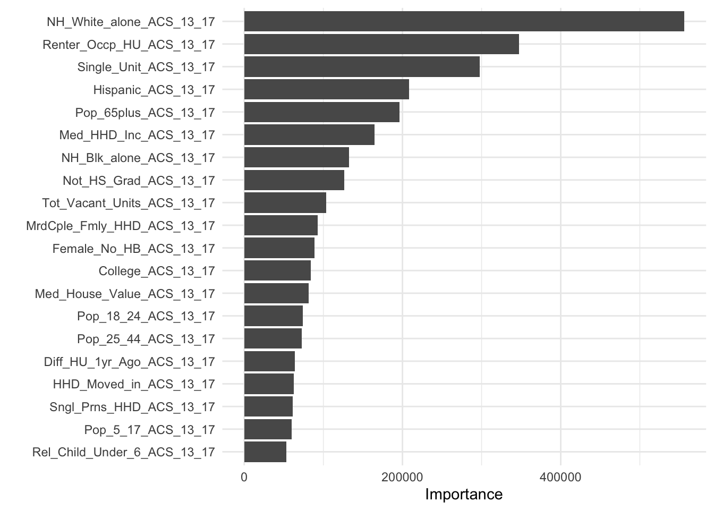

Rows: 69650 Columns: 26
── Column specification ────────────────────────────────────────────────────────
Delimiter: ","
chr (2): State_name, County_name
dbl (24): Low_Response_Score, non_return_rate, Renter_Occp_HU_ACS_13_17, Pop...
ℹ Use `spec()` to retrieve the full column specification for this data.
ℹ Specify the column types or set `show_col_types = FALSE` to quiet this message.19 Ensembling
19.1 Motivation
A team of mediocre predictive models can often outperform one excellent predictive model.
This chapter introduces ensembling, the process of combining predictions from multiple models into one prediction. We will focus on ensembling trees.
This chapter also introduces an extended example of predicting a low response rate on the US Census Bureau’s decennial census planning database.
19.2 Planning Database
- Motivation: The decennial census is used to allocate hundreds of billions of dollars and to redistrict political power. Ensuring an accurate count is imperative. The Census Bureau uses the planning database (PDB) and a modeled low-response score (LRS) to plan outreach to improve response rates.
- Implementation data: Demographic and housing information for the American Community Survey at the census tract and census block group levels.
- Modeling data: Demographic and housing information for the American Community Survey and the low-response score for the 2010 Decennial Census at the census tract and census block group levels.
- Objective: Predict which areas will have the lowest response rates to the 2020 Decennial Census.
- Tools: Linear regression based on the top 25 predictors from gradient-boosted trees.
- Results: Unclear but we’ll see more in these notes!
19.2.1 Hard to Count Score
The US Census Bureau develops planning databases to prepare for decennial censuses. This database has many uses, but one use is to predict the census tracts and census block groups that will have the worst response rates for the decennial census.
This exercise began with the Hard to Count Score (Antonio Bruce, Robinson, and Sanders 2001; Anotnio Bruce and Robinson 2003). The authors used theory to develop an index of twelve variables correlated with non response and under counting to sort census tracts and plan for the next decennial census.
- Renter occupied units
- Unmarried
- Vacant units
- Multi-unit structures
- Below poverty
- No high school graduate
- Different housing unit 1 year ago
- Public assistance
- Unemployed
- Crowded units
- Linguistically isolated households
- No phone service
This is clearly a predictive task but the authors brought a traditional social sciences approach.
19.2.2 Kaggle Competition
In 2012, the US Census Bureau crowd sourced a predictive modeling competition on Kaggle (Erdman and Bates 2014, 2017). The competition was motivated by the America COMPETES act. Kaggle competitions allow teams to compete in predictive modeling tasks for cash prizes.
The Census Bureau’s Kaggle Competition tried to answer the question, “Which statistical model best predicts 2010 Census mail return rates?”
Participants use the 2012 Block-Group-Level Planning Database and were evaluated using mean squared error weighted by 2010 population.1
244 teams and individuals competed. Bill Bame, a software develop from Maryland, won the competition with a mean squared error of 2.60. The top three finished use ensembled tree-based models like random forests and boosted trees (erdman201?).
19.2.3 The Low-Response Score
The best models in the Kaggle competition did not directly meet the needs of the US Census Bureau because the models were “black box” and included auxiliary data.
Instead, the Census Bureau took the 25 “most important” variables from the winning model and used multiple linear regression to construct and evaluate the low response score (Erdman and Bates 2014, 2017). This increased the MSE of the model used to fit the LRS but increased the interpretability.
Follow-up work seeks to improve the model performance of an interpretable model for this exact implementation.
19.2.4 LRS Set Up
We will work with the tract-level PDB instead of the block-group level PDB to simplify computation. The PDB contains more than 500 variables. For now, we only consider the top 25 variables to further simplify computation.
Lastly, we set up \(v\)-fold cross validation. We only use five folds because some of the models take a long time to fit to the data.
19.2.5 Linear Regression
We first consider multiple linear regression. We need a recipe, a model, and a workflow to fit the model five times and evaluate its predictive accuracy.
The data set contains a few variables that shouldn’t be included in the model. We use add_role() to turn them into “ids” and then step_rm(has_role("id")) to remove them from consideration.
lm_rec <- recipe(non_return_rate ~ ., pdb_train) |>
add_role(State_name, County_name, Low_Response_Score, new_role = "id") |>
step_rm(has_role("id"))
lm_mod <- linear_reg() |>
set_mode(mode = "regression") |>
set_engine(engine = "lm")
lm_wf <- workflow() |>
add_recipe(lm_rec) |>
add_model(lm_mod)
lm_resamples <- lm_wf |>
fit_resamples(resamples = pdb_folds)The model has good, but not great performance.
# A tibble: 2 × 6
.metric .estimator mean n std_err .config
<chr> <chr> <dbl> <int> <dbl> <chr>
1 rmse standard 5.33 5 0.0580 Preprocessor1_Model1
2 rsq standard 0.485 5 0.00906 Preprocessor1_Model1We can use last_fit() to fit the model to all of the training data and extract_fit_parsnip() to examine the estimated coefficients.
parsnip model object
Call:
stats::lm(formula = ..y ~ ., data = data)
Coefficients:
(Intercept) Renter_Occp_HU_ACS_13_17
25.852142128 0.000527581
Pop_18_24_ACS_13_17 Female_No_HB_ACS_13_17
0.001415666 0.000738697
NH_White_alone_ACS_13_17 Pop_65plus_ACS_13_17
-0.000940139 -0.001967564
Rel_Child_Under_6_ACS_13_17 Males_ACS_13_17
0.001897582 0.000884922
MrdCple_Fmly_HHD_ACS_13_17 Pop_25_44_ACS_13_17
-0.002668457 0.001216952
Tot_Vacant_Units_ACS_13_17 College_ACS_13_17
0.002089677 -0.000344927
Med_HHD_Inc_ACS_13_17 Pop_45_64_ACS_13_17
-0.000097679 0.001730143
HHD_Moved_in_ACS_13_17 Hispanic_ACS_13_17
0.003871744 -0.000371730
Single_Unit_ACS_13_17 Diff_HU_1yr_Ago_ACS_13_17
-0.002632994 -0.000848577
Pop_5_17_ACS_13_17 NH_Blk_alone_ACS_13_17
0.001696031 0.000546687
Sngl_Prns_HHD_ACS_13_17 Not_HS_Grad_ACS_13_17
-0.004322504 -0.000210310
Med_House_Value_ACS_13_17
0.000009283 19.2.6 Regression Trees
Next, we consider regression trees.
dt_rec <- recipe(non_return_rate ~ ., pdb_train) |>
add_role(State_name, County_name, Low_Response_Score, new_role = "id") |>
step_rm(has_role("id"))
dt_mod <- decision_tree(cost_complexity = 0.001) |>
set_mode(mode = "regression") |>
set_engine(engine = "rpart")
dt_wf <- workflow() |>
add_recipe(dt_rec) |>
add_model(dt_mod)
dt_resamples <- dt_wf |>
fit_resamples(resamples = pdb_folds)Again, the model has good, but not great performance.
19.3 Ensembling
Simple predictive models like linear regression, KNN, and regression trees are intuitive but are often outperformed by more complicated tree-based, ensembled predictive models like random forests and XGBoost.
Ensembling
Ensembling combine predictions from multiple models into one prediction.
Bagging, boosting, and stacking are three strategies for ensembling. We will cover bagging and boosting in this chapter. Random forests are an implementation bagging. XGBoost is an implementation of boosting.
19.4 Bagging
Bagging
Bagging, short for bootstrap aggregation, is a general purpose ensembling method that reduces the variance of a predictive model by training the model on many bootstrap samples2 and then ensembling the predictions.
The mean is typically used to ensemble in regression applications and majority vote is typically use to ensemble in classification applications.
Averaging a set of observations to reduce variance is a fundamental statistical idea. Recall the standard error of the sample mean. Suppose we have a set of data \(x_1, x_2, ...x_n\). Let each each observations be independent and have variance \(\sigma^2\). The variance of the mean \(\bar{x}\) is \(\frac{\sigma^2}{n}\). Averaging the observations reduces variance. Averaging even more observations further reduces variance but at a diminishing rate.
It is possible to reduce variance error by training many predictive models on different sets of data and then ensembling the predictions.
We typically don’t have enough data to train models on partitions of the data, so we use bootstrap sampling.
Bagging Algorithm
- bootstrap sample from the data \(B\) times.
- for the \(b^{th}\) bootstrap sample, fit a predictive model.
- Average the predicted values.
If \(\hat{f}^b(\vec{x})\) is the model trained on the \(b^{th}\) bootstrap sample, then
\[\hat{f}_\text{bagged}(\vec{x}) = \frac{1}{B} \sum_{b = 1}^B \hat{f}^b(\vec{x})\]
Bagging works particularly well with high-variance models like regression trees.
We will first demonstrate bagged trees, which use the following algorithm:
Bagged Trees Algorithm
- Bootstrap sampling from the data \(B\) times.
- For the \(b^{th}\) bootstrap sample, fit a regression tree.
- To make a prediction, calculate the mean of the \(B\) predicted values.
Bagged trees have four hyperparameters, but three of the hyperparameters are from regression trees:
- The number of trees
- The cost-complexity parameter
- The maximum tree depth
- The minimum number of observations in a terminal node
In practice, the number of trees does not need to be tuned and using too many trees will not lead to a model that is overfit. Typically, the number of trees can be set in the 100 to 500 range based on computational limitations.
Consider the simulated data and the predicted values for different numbers of trees.
Code
library(tidymodels)
set.seed(20201004)
x <- runif(n = 1000, min = 0, max = 10)
data1 <- bind_cols(
x = x,
y = 10 * sin(x) + x + 20 + rnorm(n = length(x), mean = 0, sd = 2)
)
set.seed(20201007)
# create a split object
data1_split <- initial_split(data = data1, prop = 0.75)
# create the training and testing data
data1_train <- training(x = data1_split)
data1_test <- testing(x = data1_split)
ggplot() +
geom_point(data = data1_train, aes(x = x, y = y), alpha = 0.25) +
labs(
title = "Example 1 Data"
) +
theme_minimal()
The syntax for bagged trees is slightly different than other models and requires the use of library(baguette). Here, times is the number of bootstraps to use for the algorithm. When times = 1, then the algorithm is one regression tree trained on a bootstrap sample of the data.
Notice how the predicted value line smooths out because of the averaging of many trees.
library(baguette)
bagged_trees1 <- bag_tree(cost_complexity = 0.001) |>
set_engine("rpart", times = 1) |> # 1 ensemble member
set_mode("regression") |>
fit(y ~ ., data = data1)
bagged_trees2<- bag_tree(cost_complexity = 0.001) |>
set_engine("rpart", times = 25) |> # 25 ensemble members
set_mode("regression") |>
fit(y ~ ., data = data1)
bagged_trees3 <- bag_tree(cost_complexity = 0.001) |>
set_engine("rpart", times = 100) |> # 100 ensemble members
set_mode("regression") |>
fit(y ~ ., data = data1)
bagged_trees4 <- bag_tree(cost_complexity = 0.001) |>
set_engine("rpart", times = 500) |> # 500 ensemble members
set_mode("regression") |>
fit(y ~ ., data = data1)
# create a grid of predictions
new_data <- tibble(x = seq(0, 10, 0.1))
predictions_grid <- tibble(
x = seq(0, 10, 0.1),
`Trees = 1` = predict(object = bagged_trees1, new_data = new_data)$.pred,
`Trees = 25` = predict(object = bagged_trees2, new_data = new_data)$.pred,
`Trees = 100` = predict(object = bagged_trees3, new_data = new_data)$.pred,
`Trees = 500` = predict(object = bagged_trees4, new_data = new_data)$.pred
) |>
pivot_longer(-x, names_to = "model", values_to = ".pred")
ggplot() +
geom_point(data = data1_train, aes(x = x, y = y), alpha = 0.25) +
geom_path(data = predictions_grid, aes(x = x, y = .pred), color = "red") +
facet_wrap(~model) +
labs(
title = "Example 1: Data with Predictions (Bagged Regression Trees)",
subtitle = "Prediction in red"
) +
theme_minimal()
Let’s use bagged trees to predict the low response rate from the Census PDB example.
bagged_trees_mod <- bag_tree(cost_complexity = 0.001) |>
set_engine("rpart", times = 100) |>
set_mode("regression")
bagged_trees_mod_wf <- workflow() |>
add_recipe(dt_rec) |>
add_model(bagged_trees_mod)
bagged_trees_resamples <- bagged_trees_mod_wf |>
fit_resamples(resamples = pdb_folds)
collect_metrics(bagged_trees_resamples)# A tibble: 2 × 6
.metric .estimator mean n std_err .config
<chr> <chr> <dbl> <int> <dbl> <chr>
1 rmse standard 5.03 5 0.0380 Preprocessor1_Model1
2 rsq standard 0.541 5 0.00455 Preprocessor1_Model119.5 Random Forests
Averaging many highly correlated quantities does not lead to as large a reduction in variance as averaging many uncorrelated quantities. (James et al. 2017)
The models fit on bootstrap samples of data are often highly correlated. Random forests, one of the most popular bagging algorithms, aims to decorrelate trees and reduce variance error more than simple bagging.
Random forests are identical to bagged trees, except each time a split is considered in a regression tree, RF only considers a subset of predictors instead of all predictors. By intentionally making each tree a little worse, the algorithm typically makes better predictions.
Random Forests Algorithm
- Bootstrap sampling from the data \(trees\) times.
- For the \(i^{th}\) bootstrap sample, fit a regression tree.
- When fitting the regression tree, only consider
mtrypredictors for each split. Stop splitting the data ifmin_nis reached in a node. - To make a prediction, calculate the mean of the \(trees\) predicted values.
mtry, the number of predictors considered at each split, typically defaults to \(\lfloor\sqrt{p}\rfloor\), where \(p\) is the total number of predictors. mtry is a hyperparameter that can be tuned and the optimal value typically depends on the number of “useful” predictors in data set.
Regularization
Regularization is a change to a loss function or algorithm intended to intentionally reduce the intensity of a model fit to reduce variance error.
LASSO regression (L-1 regularization) and Ridge regression (L-2 regularization) are two popular regularization techniques.
Random forests are regularized models, and have similarities to linear regression with ridge regression, even though it is a non-parametric model.
As \(mtry \to p\), RF converges with bagged trees.
Let’s use random forests to predict the low response rate from the Census PDB example.
Code
rf_rec <- recipe(non_return_rate ~ ., pdb_train) |>
add_role(State_name, County_name, Low_Response_Score, new_role = "id") |>
step_rm(has_role("id"))
rf_mod <- rand_forest(
mtry = tune(),
min_n = tune(),
trees = 200
) |>
set_mode(mode = "regression") |>
set_engine(
engine = "ranger",
importance = "impurity",
num.threads = 4
)
rf_wf <- workflow() |>
add_recipe(rf_rec) |>
add_model(rf_mod)
rf_grid <- grid_regular(
mtry(range = c(1, 15)),
min_n(range = c(1, 15)),
levels = 5
)
rf_resamples <- tune_grid(
rf_wf,
resamples = pdb_folds,
grid = rf_grid
)
collect_metrics(rf_resamples)
show_best(rf_resamples)
autoplot(rf_resamples)rf_rec <- recipe(non_return_rate ~ ., pdb_train) |>
add_role(State_name, County_name, Low_Response_Score, new_role = "id") |>
step_rm(has_role("id"))
# we selected these hyperparameters with tuning and cross validation
rf_mod <- rand_forest(
trees = 200,
mtry = 11,
min_n = 4
) |>
set_mode(mode = "regression") |>
set_engine(
engine = "ranger",
importance = "impurity",
num.threads = 4
)
rf_wf <- workflow() |>
add_recipe(rf_rec) |>
add_model(rf_mod)
rf_resamples <- rf_wf |>
fit_resamples(resamples = pdb_folds)The random forest results are great.
# A tibble: 2 × 6
.metric .estimator mean n std_err .config
<chr> <chr> <dbl> <int> <dbl> <chr>
1 rmse standard 4.51 5 0.0461 Preprocessor1_Model1
2 rsq standard 0.631 5 0.00571 Preprocessor1_Model119.5.1 Interpretability
It is important to understand the process for fitting models, how the nature of the data affects fitted models, and how fitted models generate predictions. Models that lack these features are often called “black box.”
Global Interpretability
The ability to understand overall model behavior for a fitted predictive modeling algorithm.
Local Interpretability
The ability to understand individual predictions for a fitted predictive modeling algorithm.
Linear regression is easy to interpret because the fitting process is simple and linear regression models have a finite number of clear regression coefficients. Regression trees result in a clear tree that often simple enough to include in the New York Times.
The shift from linear regression and regression trees, which are locally and globally interpretable to ensembled models sacrifices model interpretability. Random forests return neither simple regression coefficients or a clear, visualized tree.
Interpretable Machine Learning is a good resource for learning more.
19.5.2 Variable Importance
Linear regression returns coefficients and regression trees return trees that can be visualized. Bagged trees and random forests return neither.
Variable Importance
Variable importance is the contribution each predictor has to a fitted model.
Variable importance is an alternative approach that aims to capture the why of a model and prediction. For linear regression, variable importance is typically just the absolute value of the estimated coefficient.
For regression with random forests, variable importance is the reduction in mean squared error caused by the addition of each predictor across all of the trees. It can be imprecise for categorical predictors, but is a valuable tool for understanding a random forest model.
Here we fit the random forest model on all of the training data and then visualize the variable importance.
rf_final <- rf_wf |>
last_fit(pdb_split)
rf_final |>
extract_fit_parsnip() |>
vip(num_features = 20) 
It is common to rescale variable importance for random forests so the most important variable has a value of 1.
19.5.3 Parallelization
Parallelization
Parallelization breaks large computing tasks into smaller computing tasks and then executes those tasks on separate processors or cores at the same time.
Coordinating the parallelization requires extra computation but concurrently running the task on multiple cores can often save time.
Computers have a limited number of cores. The following code counts the number of available cores.
Warning
Do not use all available cores. Only use a subset of available cores so other computations (e.g. Spotify and email) can continue on your computer.
We will focus on two forms of parallelization. First, parallelization is simple with bagged models because trees are independently grow. Simply include num.threads in the set_engine() call.
Parallelization is more difficult with boosted models, which are sequentially trained. The hyperparameter tuning later in this chapter uses a more complex socket parallelization with the following setup. This should detect a backend built into library(tidymodels) and parallelize the hyperparameter tuning with an entire model fit allocated to each core.
library(doFuture)
library(doParallel)
# detect the number of cores
all_cores <- parallel::detectCores(logical = FALSE)
# set up the parallel backend using futures
registerDoFuture()
# set up socket parallelization
cl <- makeCluster(all_cores - 4L)
# plan for parallelization
plan(cluster, workers = cl)19.6 Boosting
Boosting appears to dominate bagging on most problems, and became the preferred choice. (Hastie, Tibshirani, and Friedman 2009)
Boosting
Boosting is a general purpose ensembling method that reduces the bias of a predictive model by sequentially fitting predictive models using information from the previous iteration of the sequence. For regression, the \(i^{th}\) predictive model is typically fit on the residuals from the \((i - 1)^{th}\) predictive model.
Boosting Algorithm for Regression
- Set \(\hat{f}(\vec{x}) = 0\) and \(r_i = y_i\) where \(r_i\) is the \(i^{th}\) residual and \(y_i\) is the observed value for the \(i^{th}\) observation in the training data.
- For \(b = 1, 2, ..., B\),
- Fit a predictive model \(\hat{f}^b\) to the data \((\mathbf{X}, \vec{r})\).
- Update \(\hat{f}\) by adding a weighted model
\[\hat{f}(\vec{x}) \leftarrow \hat{f}(\vec{x}) + \lambda\hat{f}^b(\vec{x})\]
(c) Update the residuals\[r_i \leftarrow r_i - \lambda\hat{f}^b(\vec{x})\]
- Output the final model
\[\hat{f}(\vec{x}) = \sum_{b = 1}^B \lambda\hat{f}^b(\vec{x})\]
19.7 XGBoost
XGBoost is a specific, tree-based boosting algorithm that frequently wins predictive modeling competitions.
XGBoost Algorithm for Regression
- Set \(\hat{f}(\vec{x}) = 0\) and \(r_i = y_i\) where \(r_i\) is the \(i^{th}\) residual and \(y_i\) is the observed value for the \(i^{th}\) observation in the training data.
- For \(b = 1, 2, ..., B\),
- Fit a tree with \(d\) splits \(\hat{f}^b\) to the data \((\mathbf{X}, \vec{r})\).
- Update \(\hat{f}\) by adding a new tree
\[\hat{f}(\vec{x}) \leftarrow \hat{f}(\vec{x}) + \lambda\hat{f}^b(\vec{x})\]
(c) Update the residuals\[r_i \leftarrow r_i - \lambda\hat{f}^b(\vec{x})\]
- Output the final model
\[\hat{f}(\vec{x}) = \sum_{b = 1}^B \lambda\hat{f}^b(\vec{x})\]
Consider a few lessons from James et al. (2017):
- Setting \(B\) too large can slowly lead to overfitting for XGBoost. Bagging and random forests do not overfit with large \(B\).
- \(\lambda\) is the learning rate and is typically near 0.01 or 0.001. Smaller values of \(\lambda\) require very large \(B\).
- \(d\), the number of splits in each tree, can be set as low as \(d = 1\). In this case, each tree is only a single split or “stump.”
The performance of XGBoost is very sensitive to hyperparameter tuning. In general, fitting the model is computationally very expensive.
XGBoost does not parallelize as easily as random forests because trees are fit sequentially instead of independently. It is possible to parallelize hyperparameter tuning.
Code
library(doFuture)
library(doParallel)
# detect the number of cores
all_cores <- parallel::detectCores(logical = FALSE)
# set up the parallel backend using futures
registerDoFuture()
# set up socket parallelization
cl <- makeCluster(all_cores - 4L)
# plan for parallelization
plan(cluster, workers = cl)
xgb_spec <- boost_tree(
trees = 1000,
tree_depth = tune(), min_n = tune(),
loss_reduction = tune(), ## first three: model complexity
sample_size = tune(), mtry = tune(), ## randomness
learn_rate = tune() ## step size
) |>
set_engine("xgboost") |>
set_mode("regression")
set.seed(1)
xgb_grid <- grid_latin_hypercube(
tree_depth(),
min_n(range = c(2, 10)),
loss_reduction(range = c(-5, -3)),
sample_size = sample_prop(),
mtry(range = c(1, 10)),
learn_rate(range = c(-5, -1)),
size = 30
)
xgb_wf <- workflow() |>
add_recipe(rf_rec) |>
add_model(xgb_spec)
xgb_resamples <- tune_grid(
xgb_wf,
resamples = pdb_folds,
grid = xgb_grid
)
collect_metrics(xgb_resamples)# hyperparameters selected with cross validation and tuning
xgb_spec <- boost_tree(
trees = 1000,
tree_depth = 12,
min_n = 8,
loss_reduction = 0.00007778243,
sample_size = 0.7604136,
mtry = 8,
learn_rate = 0.01237174241
) |>
set_engine("xgboost") |>
set_mode("regression")
xgb_wf <- workflow() |>
add_recipe(rf_rec) |>
add_model(xgb_spec)
xgb_resamples <- xgb_wf |>
fit_resamples(resamples = pdb_folds)These results are the best.
19.8 Final Comparison
Finally, let’s compare the RMSE and \(r\)-squared for linear regression, regression trees, bagged trees, random forests (with hyperparameter tuning), and XGBoost (with hyperparameter tuning).
bind_rows(
`Linear regression` = collect_metrics(lm_resamples) |>
filter(.metric == "rmse"),
`Regression trees` = collect_metrics(dt_resamples) |>
filter(.metric == "rmse"),
`Bagged trees` = collect_metrics(bagged_trees_resamples) |>
filter(.metric == "rmse"),
`Random forest` = collect_metrics(rf_resamples) |>
filter(.metric == "rmse"),
`XGBoost` = collect_metrics(xgb_resamples) |>
filter(.metric == "rmse"),
.id = "model"
)# A tibble: 5 × 7
model .metric .estimator mean n std_err .config
<chr> <chr> <chr> <dbl> <int> <dbl> <chr>
1 Linear regression rmse standard 5.33 5 0.0580 Preprocessor1_Model1
2 Regression trees rmse standard 5.30 5 0.0334 Preprocessor1_Model1
3 Bagged trees rmse standard 5.03 5 0.0380 Preprocessor1_Model1
4 Random forest rmse standard 4.51 5 0.0461 Preprocessor1_Model1
5 XGBoost rmse standard 4.39 5 0.0499 Preprocessor1_Model1bind_rows(
`Linear regression` = collect_metrics(lm_resamples) |>
filter(.metric == "rsq"),
`Regression trees` = collect_metrics(dt_resamples) |>
filter(.metric == "rsq"),
`Bagged trees` = collect_metrics(bagged_trees_resamples) |>
filter(.metric == "rsq"),
`Random forest` = collect_metrics(rf_resamples) |>
filter(.metric == "rsq"),
`XGBoost` = collect_metrics(xgb_resamples) |>
filter(.metric == "rsq"),
.id = "model"
)# A tibble: 5 × 7
model .metric .estimator mean n std_err .config
<chr> <chr> <chr> <dbl> <int> <dbl> <chr>
1 Linear regression rsq standard 0.485 5 0.00906 Preprocessor1_Model1
2 Regression trees rsq standard 0.490 5 0.00384 Preprocessor1_Model1
3 Bagged trees rsq standard 0.541 5 0.00455 Preprocessor1_Model1
4 Random forest rsq standard 0.631 5 0.00571 Preprocessor1_Model1
5 XGBoost rsq standard 0.649 5 0.00612 Preprocessor1_Model1